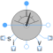

MultiSensorMultiphase sensor to measure current, voltage and power |

|
Information
This information is part of the Modelica Standard Library maintained by the Modelica Association.
This multi sensor measures currents, voltages and instantaneous electrical power of a multiphase system and has separated voltage and current paths. The plugs of the voltage paths are pv and nv, the plugs of the current paths are pc and nc. The internal resistance of each current path is zero, the internal resistance of each voltage path is infinite.
See also
SinglePhase.Sensors.MultiSensor ReferenceSensor, FrequencySensor, PotentialSensor, VoltageSensor, VoltageQuasiRMSSensor, CurrentSensor, CurrentQuasiRMSSensor, PowerSensor
Outputs (8)
| abs_i |
Default Value: 'abs'(i) Type: Current[m] (A) Description: Absolute of complex currents |
|---|---|
| arg_i |
Default Value: arg(i) Type: Angle[m] (rad) Description: Argument of complex currents |
| abs_v |
Default Value: 'abs'(v) Type: Voltage[m] (V) Description: Absolute of complex voltages |
| arg_v |
Default Value: arg(v) Type: Angle[m] (rad) Description: Argument of complex voltages |
| abs_apparentPower |
Default Value: 'abs'(apparentPower) Type: ApparentPower[m] (V·A) Description: Absolute of complex apparent power signals |
| arg_apparentPower |
Default Value: arg(apparentPower) Type: Angle[m] (rad) Description: Argument of complex apparent power signals |
| abs_apparentPowerTotal |
Default Value: 'abs'(apparentPowerTotal) Type: ApparentPower (V·A) Description: Absolute of sum complex apparent power |
| arg_apparentPowerTotal |
Default Value: arg(apparentPowerTotal) Type: Angle (rad) Description: Argument of sum complex apparent power |
Connectors (8)
| pc |
Type: PositivePlug Description: Positive plug, current path |
|
|---|---|---|
| nc |
Type: NegativePlug Description: Negative plug, current path |
|
| pv |
Type: PositivePlug Description: Positive plug, voltage path |
|
| nv |
Type: NegativePlug Description: Negative plug, voltage path |
|
| i |
Type: ComplexOutput[m] Description: Current as complex output signal |
|
| v |
Type: ComplexOutput[m] Description: Voltage as complex output signal |
|
| apparentPower |
Type: ComplexOutput[m] Description: Instantaneous apparent power as complex output signal |
|
| apparentPowerTotal |
Type: ComplexOutput Description: Sum of instantaneous apparent power as complex output signal |